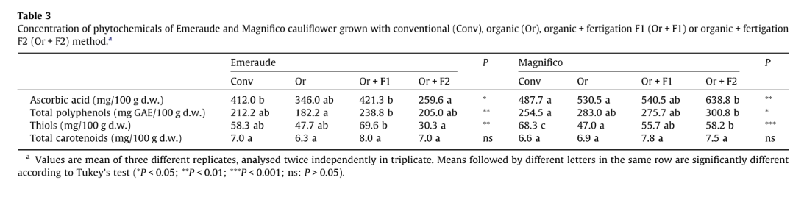
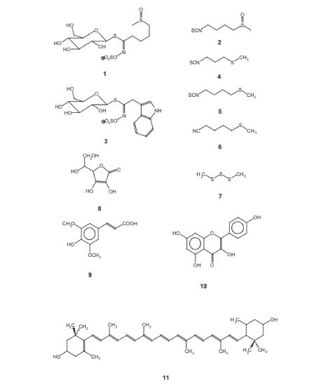

És millor la coliflor ecològica o convencional?
He buscat a Google acadèmic.
He trobat un article escrit per Picchi et al. (2012) que analitza si hi ha diferències entre la coliflor cultivada convencionalment i cultivada ecològicament pel que fa al contingut de nutrients. 
En la imatge de dalt podem veure una taula on es comparen la coliflor de cultiu ecològic i de cultiu convencional, concretament es miren els nivells d'àcid ascòrbic, que és vitamina C, polifenols totals, tiols i caratenoides totals. Sembla que hi ha menys vitamina C en les coliflors ecològiques de la varietat Emeraude i no hi ha diferències en el nivell de vitamina C en les coliflors de la varietat Magnifico. En el cas dels polifenols totals, que són uns productes antioxidants saludables, s'observa que els polifenols totals també estan en menor proporció en coliflor ecològica Emeraude i en canvi en la varietat Magnifico passa a l'inrevés, l'ecològic és millor perquè té més polifenols. Els tiols són iguals en la varietat Emeraude i en la varietat Magnifico hi ha menys tiols en les coliflors ecològiques. Totes les coliflors tenen el mateix nivell de carotenoides.
 Estructures dels fitoquímics més importants de la coliflor trobats i quantificats en el treball. En la estructura 1 es pot veure la glucorafanina; en la 2, sulforafan; en la 3, glucobrassicina; en la 4, isotiocianat de 3-metil-tio-propil; en la 5, isotiocianat de 4-metil-tio-butil; en la 6, 4-metil-tio-butil nitril; en la 7, trisulfur de dimetil; en la 8, àcid ascòrbic; en la 9, àcid sinàpic; en la 10; kaempferol; i per últim, la número 11, luteïna. Els compostos 9 i 10 s'han mesurat amb les dades de polifenols totals. El compost 11 s'ha mesurat amb els carotenoides totals continguts.En conclusió: en la taula de més amunt, es pot observar que la coliflor varietat Emeraude és millor el convencional que l'ecològic, ja que conté més àcid ascòrbic, els polifenols totals, els tiols i el total de carotenoides. En canvi en la varietat Magnifico s'observa que és millor l'ecològic per la diferència que hi ha entre els nutrients pel qual està formada.
Per tant, Picchi et al, 2012, van demostrar que la coliflor de varietat Emeraude és millor la convencional. I en el cas de la varietat Magnifico, és millor l'ecològica.